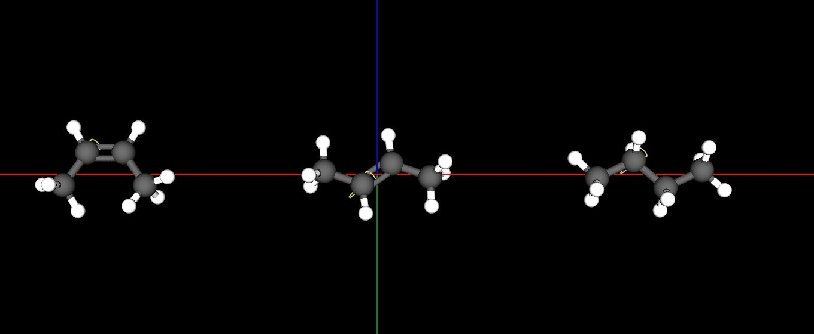
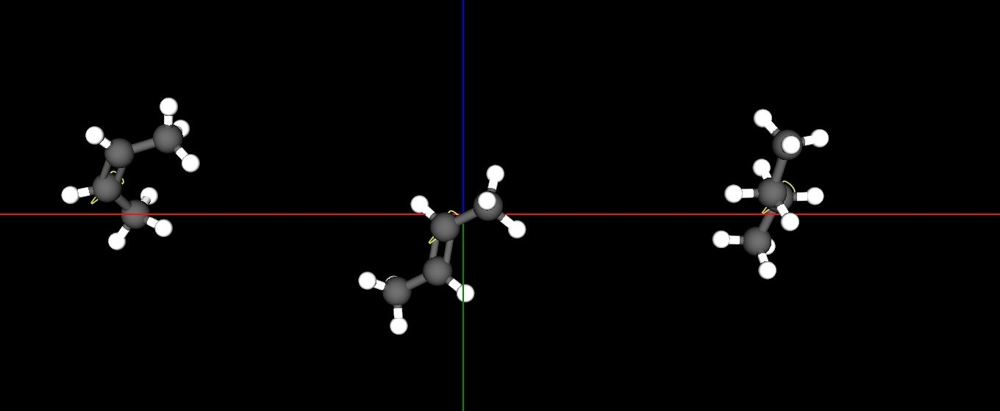
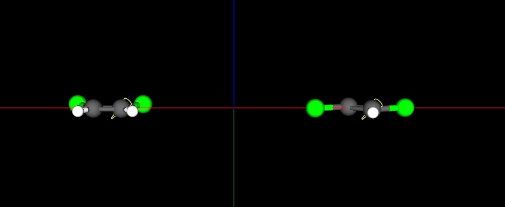
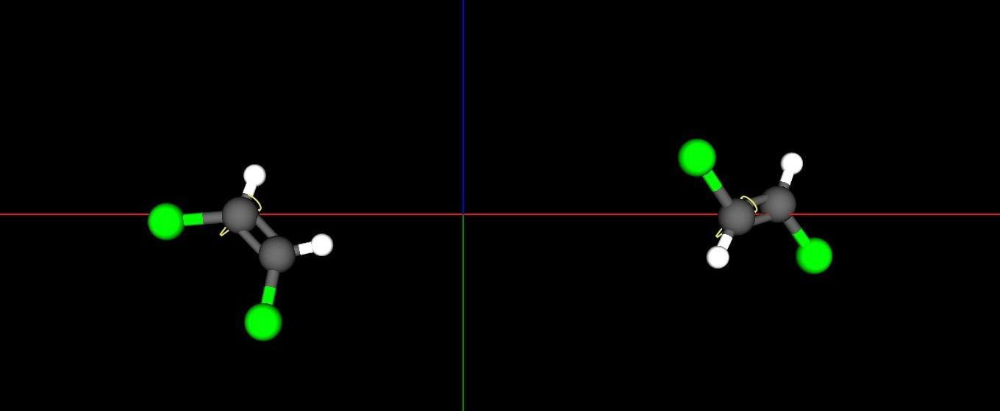

Cis–Trans Isomerism: Why a Double Bond Makes Two Substances
Students run cis and trans isomers side by side in AIMS and measure why they do not turn into each other and how one of them answers an electric field, with an AI agent setting up each simulation they ask for.
Two molecules can have the same atoms, joined in the same order, and still be different substances. Cis–trans isomers are the simplest case. They differ only in which side of a double bond two of their groups are on. AIMS models every atom of such a pair, and an AI agent sets up the experiments. A student asks a plain-language question, and the agent builds the molecules, runs them, measures them, and posts the measured data in the chat. This article follows two questions: why a cis isomer and a trans isomer do not turn into each other, and how the two differ in a property that can be measured. The window below shows the two isomers of but-2-ene. Rotate each one and compare where the two end carbon atoms are.
The two isomers of but-2-ene. Each has four carbon atoms in a chain with a double bond in the middle.
What Is Cis–Trans Isomerism?
But-2-ene has four carbon atoms in a chain, and the bond in the middle is a double bond. In the cis isomer the two end carbon atoms are on the same side of the double bond. In the trans isomer they are on opposite sides. The word cis is Latin for "on this side", and trans is Latin for "across". The two molecules are stereoisomers: they have the same formula, C4H8, and the same sequence of bonds, and they differ in the arrangement of their atoms in space.
They are two substances. Cis-but-2-ene melts at −139 °C and boils at 3.7 °C, and trans-but-2-ene melts at −106 °C and boils at 0.9 °C. Each can be kept in its own bottle, and neither turns into the other while it is stored. Butane, C4H10, has the same chain with a single bond in the middle. Its chain also takes a stretched shape and bent shapes, and those shapes cannot be bottled separately. They are conformers, shapes of one substance that change into each other all the time. The first experiment below shows the difference between an isomer and a conformer.
Running Experiments by Asking
AIMS is an AI-native environment. Building the molecules, running them, measuring an angle or a dipole, and tabulating the results are the agent's work. A student asks the agent whether "heat turns one butene into the other", and the agent recognizes the intent, runs each molecule at several temperatures, and posts the results in the conversation.
Go to AIMS and open the list of examples, with the lightbulb button on the toolbar or the Examples item in the main menu (☰). Open Isomers and Conformers: But-2-ene and Butane from the list (Chemistry, Isomers). Examples belong to their author, so sign in and save your own copy with Save Project As in the Project menu. Then open the chat and type the prompts below. The answer to the first prompt in the example keeps its last frame: press "Load this state" on its card and the lab continues from 100 ps.
- Shapes — “Run it for 100 ps and chart the dihedral angle of the four carbon atoms of each molecule.”
- Heat — “Does heat turn one butene into the other? Run each molecule alone at 300 K, 600 K, 1000 K and 1500 K.”
- Barrier — “How much energy does it take to twist the middle bond of each molecule?”
Isomers and Conformers
The window below holds three molecules at 300 K: cis-but-2-ene on the left, trans-but-2-ene in the middle, and butane on the right, in its stretched shape. One of the two middle carbon atoms of each molecule is fixed in place, so the molecules stay where they are, and the lab marks each fixed atom with a pin. The shape of each chain is described by one angle, the dihedral angle of its four carbon atoms. The angle is 0° when the two end carbons are on the same side of the middle bond and 180° when they are on opposite sides. Press Play and watch the three chains.
Cis-but-2-ene (left), trans-but-2-ene (middle), and butane (right), seen from above. Butane changes between a stretched shape and bent shapes, and the two butenes only rock.
The two butenes kept their shapes for the whole 100 ps. The angle of cis-but-2-ene stayed between 0° and 18°, and the angle of trans-but-2-ene between 160° and 180°. Butane changed shape 8 times. It was stretched, with the angle near 180°, for 45% of the time, and bent, with the angle near 60°, for 50%. Each change of butane is a chance event, and the count differs from run to run: six runs of this kind gave between 1 and 15 changes.


The three chains at the start (left) and after 100 ps, loaded by the "Load this state" card (right). The two butenes have kept their shapes, and butane, on the right, has gone from its stretched shape to a bent one.
The Double Bond Holds at 1500 K
The second prompt runs each molecule alone for 100 ps at four temperatures.
| Temperature | Cis-but-2-ene: range of the angle | Trans-but-2-ene: range of the angle | Butane: changes of shape |
|---|---|---|---|
| 300 K | 0° to 18° | 163° to 180° | 2 |
| 600 K | 0° to 32° | 152° to 180° | 55 |
| 1000 K | 0° to 36° | 148° to 180° | 115 |
| 1500 K | 0° to 44° | 132° to 180° | 319 |
Each molecule alone for 100 ps at four temperatures. A butene changes from one isomer to the other only if its angle passes 90°.
In these runs heat did not turn either butene over. At 1500 K the angle of the cis molecule never passed 44°, and the angle of the trans molecule never fell below 132°. Butane changed shape more often as the temperature rose, from 2 times at 300 K to 319 times at 1500 K. The butane count at 300 K, 2, is lower than the 8 of the run above, and both are inside the spread from run to run.
A run of 100 ps is short. Real but-2-ene does turn when it is heated far enough: Kaiser and Pierce measured the rate in the gas between 296 K and 875 K, with a barrier of about 265 kJ/mol. Their rate, extended to higher temperatures, gives one turn in about 20 microseconds at 1500 K, which is 200,000 times the length of this run, and one turn in about a second at 1000 K. At 300 K the same rate gives a waiting time far longer than the age of the universe. This is why each isomer can be stored at room temperature.
The third prompt measures the reason. The agent holds one half of each molecule still, turns the other half about the middle bond in steps of 10°, and adds up the energy at each step.
| Molecule | Middle bond | Barrier to the next shape | At a twist of | Barrier ÷ thermal energy at 300 K |
|---|---|---|---|---|
| Cis-but-2-ene | double | 270 kJ/mol | 90° | 108 |
| Trans-but-2-ene | double | 270 kJ/mol | 90° | 108 |
| Butane | single | 13 kJ/mol | 60° | 5 |
The energy needed to twist the middle bond of each molecule to the top of its first barrier. The thermal energy at 300 K is 2.5 kJ/mol.
Twisting the double bond of a butene costs about 270 kJ/mol, more than 100 times the thermal energy at 300 K and still 21 times the thermal energy at 1500 K. Butane meets a barrier of 13 kJ/mol between its stretched shape and a bent shape, 5 times the thermal energy at 300 K, and thermal motion carries it across about once in ten picoseconds. A double bond is two bonds between the same pair of atoms. The second bond exists only while the two halves of the molecule lie in one plane, and a twist of 90° breaks it. A single bond stays whole at every angle, and its small barrier comes from the atoms on its two ends passing each other.
The barrier of 270 kJ/mol is a number that the lab was given. Its force field holds a carbon–carbon double bond with a barrier close to the measured one, and the experiment shows what follows from a barrier of that height. The barrier of butane comes out of the force field's general terms and is a little below the value for real butane, about 15 kJ/mol.
A Polar Isomer and a Nonpolar One
The shape of an isomer changes its properties. 1,2-Dichloroethene has two carbon atoms joined by a double bond, and each carbon carries one chlorine atom and one hydrogen atom. A chlorine atom pulls electrons toward itself, so each carbon–chlorine bond has a negative end at the chlorine. In the cis isomer the two bonds point to the same side, and the molecule has an electric dipole. In the trans isomer they point in opposite directions and cancel.
The window below holds one molecule of each, 12 Å apart, at 300 K: the cis isomer on the left and the trans isomer on the right. One carbon atom of each molecule is fixed, so each molecule turns in place. A static electric field of 5 V/nm points up. Press Play and watch the chlorine atoms (green).
Cis-1,2-dichloroethene (left) and trans-1,2-dichloroethene (right) in an electric field that points up. The cis molecule turns its chlorine side down and stays, and the trans molecule keeps tumbling.
Open Cis and Trans Isomers in an Electric Field from the list of examples (Chemistry, Isomers). Examples belong to their author, so sign in and save your own copy with Save Project As in the Project menu. Then open the chat and type the prompts below. The answer to the first prompt in the example keeps its last frame: press "Load this state" on its card and the lab continues from 30 ps.
- Field on — “Run it for 30 ps and chart how each molecule lines up with the field.”
- Field off — “Turn the field off and run another 30 ps.”
- Dipoles — “What is the dipole of each isomer, and does it match the measured value?”
- Strength — “How strong a field does it take to line up the cis molecule? Try fields from 0.5 to 10 V/nm.”
The Field Turns the Cis Molecule
The agent measures how well each molecule lines up with the field by a cosine. For the cis molecule it is the cosine of the angle between the dipole and the field, which is 1 when the dipole points exactly along the field. For the trans molecule, which has no dipole, it is the cosine of the angle between the field and the line from one chlorine atom to the other.
The cis molecule turned its chlorine side down within 0.5 ps and kept it there. After the first 2 ps its cosine averaged 0.92 and never fell below 0.61. The trans molecule kept tumbling: its cosine averaged 0.13, and the molecule turned end over end 4 times in 30 ps. The field pushes negative charges down and positive charges up. In the cis molecule both chlorine atoms are on one side, and the pushes add up to a torque that turns the whole molecule. In the trans molecule the push on one chlorine atom is balanced by the push on the other.
With the field off, the two molecules behaved alike. The cosine of the cis molecule averaged 0.17, and the molecule turned over 7 times in 30 ps, against no turns while the field was on. The trans molecule averaged −0.20 and turned over 4 times.


The two isomers lying flat at the start (left), and after 30 ps in the field, loaded by the "Load this state" card (right). The cis molecule, on the left, has both chlorine atoms (green) turned down. The trans molecule, on the right, has one on each side.
The Dipole, and How Strong a Field
The third prompt computes the dipole of each isomer from the charges and positions of its atoms. In the lab each chlorine atom carries −0.09 e and each hydrogen atom +0.08 e, in both molecules.
| Isomer | Dipole in the lab | Measured dipole | Boiling point |
|---|---|---|---|
| Cis-1,2-dichloroethene | 1.91 D | 1.9 D | 60 °C |
| Trans-1,2-dichloroethene | 0.00 D | 0 D | 48 °C |
The dipole of each isomer from the atomic charges of the lab, beside the measured dipole and the boiling point of the liquid.
The same charges on the same atoms give a dipole of 1.9 D in one shape and none in the other. Molecules with a dipole attract their neighbors in the liquid, positive side to negative side, and the cis isomer boils about 12 °C higher than the trans isomer.
The fourth prompt runs the cis molecule alone 12 times for 20 ps at each of five fields and leaves the first 5 ps out of each run. The calculated column is the alignment of a dipole that is free to turn in any direction at 300 K, which depends only on the ratio of the energy of the dipole in the field to the thermal energy.
| Field | Dipole energy ÷ thermal energy | Alignment, measured | Alignment, calculated |
|---|---|---|---|
| 0.5 V/nm | 0.8 | 0.17 | 0.25 |
| 1 V/nm | 1.5 | 0.44 | 0.45 |
| 2 V/nm | 3.1 | 0.64 | 0.68 |
| 5 V/nm | 7.7 | 0.87 | 0.87 |
| 10 V/nm | 15.4 | 0.94 | 0.93 |
The alignment of the cis molecule with the field at 300 K, averaged over 12 runs of 20 ps at each field. An alignment of 1 means the dipole always points along the field.
The alignment grows with the field, and the measured values are within 0.08 of the calculated ones at every field. At 5 V/nm the 12 runs average 0.87, and the single run of the first prompt gave 0.92. The trans molecule in the strongest field, 10 V/nm, pointed up as often as down: its cosine averaged 0.06. A field of several volts per nanometer is far stronger than a laboratory field between two plates. In a liquid the same dipole is turned by the charges of the neighboring molecules, which are much closer.
Straight Chains and Bent Chains
Cis–trans isomerism also matters in food. A fatty acid is a long chain of carbon atoms with an acid group at one end. Oleic acid, the main fatty acid of olive oil, has one cis double bond in the middle of a chain of 18 carbon atoms, and the cis bond puts a bend in the chain. Elaidic acid is its trans isomer, and its chain is nearly straight. The window below shows the two shapes.
Oleic acid, the cis isomer, and elaidic acid, the trans isomer. Both have the formula C18H34O2.
Oleic acid melts at about 14 °C and is a liquid at room temperature. Elaidic acid melts at about 44 °C and is a solid. The accepted explanation is that straight chains lie side by side and attract each other along their whole length, while bent chains leave gaps between them. Trans fats in processed food are made of chains such as elaidic acid. This article shows the two shapes and does not measure how they pack: each molecule has 54 atoms, and a lab of 500 atoms holds nine of them, which is too few for a test of packing.
What the Lab Cannot Show
The bonds of the molecules in this lab do not form or break, and the lab has no light. Light can turn a double bond at room temperature, where heat cannot. In the eye, a molecule of retinal absorbs light and changes from a cis shape to a trans shape, and that change is the first step of vision. A catalyst can also interconvert isomers, by breaking and remaking the second bond.
In this force field the stretched shape and the bent shapes of butane have the same energy. In real butane the stretched shape is lower by about 3.8 kJ/mol and holds about 70% of the molecules at room temperature. The charges on the atoms are fixed, so an electric field cannot shift the electrons of a molecule. The molecules run alone in a vacuum with one atom fixed, and in a liquid each one is surrounded by neighbors.
What the Simulations Produced
The simulations were given the structures, the charges, and a force field, which includes the barrier of the double bond. Everything else below came out of them:
- Isomers — cis- and trans-but-2-ene keep their shapes for 100 ps at each of four temperatures from 300 K to 1500 K: the angle of the cis chain never passes 44°, and the angle of the trans chain never falls below 132°.
- Conformers — butane changes between its stretched and bent shapes 2 to 8 times in 100 ps at 300 K and 319 times at 1500 K.
- Barriers — the barrier of the double bond, 270 kJ/mol in the force field, is 108 times the thermal energy at 300 K, and the barrier of the single bond of butane comes out at 13 kJ/mol, 5 times the thermal energy.
- Dipoles — the same atomic charges give cis-1,2-dichloroethene a dipole of 1.91 D and the trans isomer none, against measured values of 1.9 D and 0.
- In a field — a field of 5 V/nm lines up the cis molecule within 0.5 ps with an alignment of 0.92 in one run and 0.87 over 12 runs, the trans molecule keeps tumbling, and the alignment at five fields is within 0.08 of the calculated values.
Conclusion
This article uses the isomers of but-2-ene and of 1,2-dichloroethene to illustrate a new way to learn science: students converse with an AI agent that turns a plain-language question into a molecular dynamics experiment and hands back measured data. Cis–trans isomerism, a first lesson in the shapes of molecules, becomes something students watch and measure for themselves in a browser: how a single bond lets a chain change shape and a double bond does not, how high the barrier of a double bond stands above the thermal energy, and how the same atoms give a dipole in one arrangement and none in the other. By pairing a physically grounded simulation with an AI that can set it up and run it, AIMS turns a student's curiosity into a genuine scientific investigation of why the shape of a molecule decides what substance it is.
← Back to AIMS